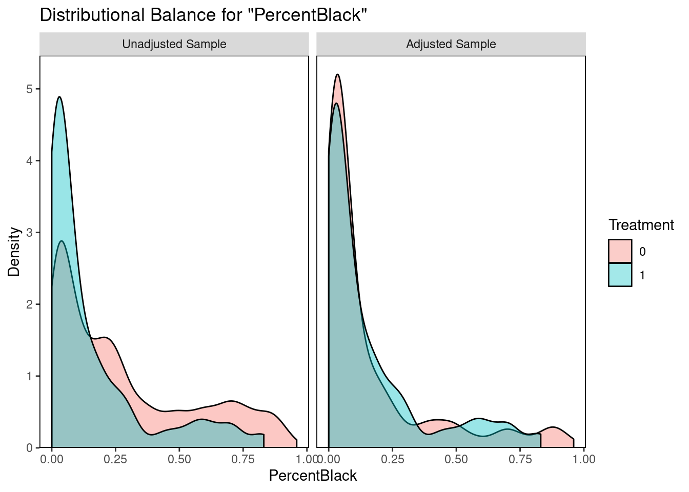
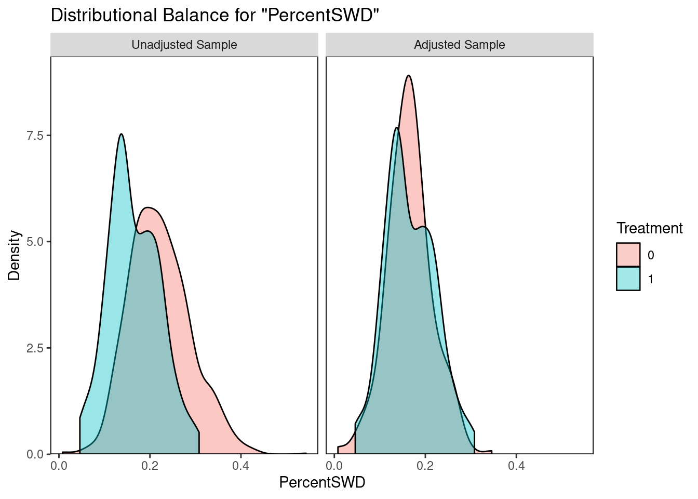

5 Part 3: Causal Inference
Given that the groups are imbalanced (GT option schools are more likely to be high income, less SWD, more students), can we balance the groups to get the ATE of the GT option on ELA and MATH scores?
library(MatchIt)
library(cobalt)
school_nearest <- matchit(formula = treatment ~ ENI + PercentBlack +
TotalEnrollment + PercentSWD,
data = small,
method = "nearest",
family = "binomial",
caliper = 0.25,
ratio = 6)
## balance improvement
bal.tab(school_nearest, m.threshold = 0.1)## Call
## matchit(formula = treatment ~ ENI + PercentBlack + TotalEnrollment +
## PercentSWD, data = small, method = "nearest", caliper = 0.25,
## ratio = 6, family = "binomial")
##
## Balance Measures
## Type Diff.Adj M.Threshold
## distance Distance 0.0164 Balanced, <0.1
## ENI Contin. 0.0030 Balanced, <0.1
## PercentBlack Contin. -0.0174 Balanced, <0.1
## TotalEnrollment Contin. -0.0127 Balanced, <0.1
## PercentSWD Contin. -0.0240 Balanced, <0.1
##
## Balance tally for mean differences
## count
## Balanced, <0.1 5
## Not Balanced, >0.1 0
##
## Variable with the greatest mean difference
## Variable Diff.Adj M.Threshold
## PercentSWD -0.024 Balanced, <0.1
##
## Sample sizes
## Control Treated
## All 1009. 101
## Matched (ESS) 366.8 98
## Matched (Unweighted) 459. 98
## Unmatched 550. 3bal.plot(school_nearest, var.name = 'TotalEnrollment', which = "both")
bal.plot(school_nearest, var.name = 'PercentBlack', which = "both")
bal.plot(school_nearest, var.name = 'PercentSWD', which = "both")bal.plot(school_nearest, var.name = 'ENI', which = "both") \[ \begin{align} ELA_scores = \beta_0 +\beta_1GTOption + \epsilon \end{align} \]
#
nearest_matched <- match.data(school_nearest)
#
model_n <- lm(`3 2019.math` ~ treatment, data = nearest_matched)
summary(model_n)##
## Call:
## lm(formula = `3 2019.math` ~ treatment, data = nearest_matched)
##
## Residuals:
## Min 1Q Median 3Q Max
## -29.5541 -6.5541 -0.3061 6.4459 30.4459
##
## Coefficients:
## Estimate Std. Error t value Pr(>|t|)
## (Intercept) 602.5541 0.5182 1162.788 <2e-16 ***
## treatment 4.7520 1.0625 4.472 1e-05 ***
## ---
## Signif. codes: 0 '***' 0.001 '**' 0.01 '*' 0.05 '.' 0.1 ' ' 1
##
## Residual standard error: 9.182 on 410 degrees of freedom
## (145 observations deleted due to missingness)
## Multiple R-squared: 0.04652, Adjusted R-squared: 0.04419
## F-statistic: 20 on 1 and 410 DF, p-value: 1.003e-05